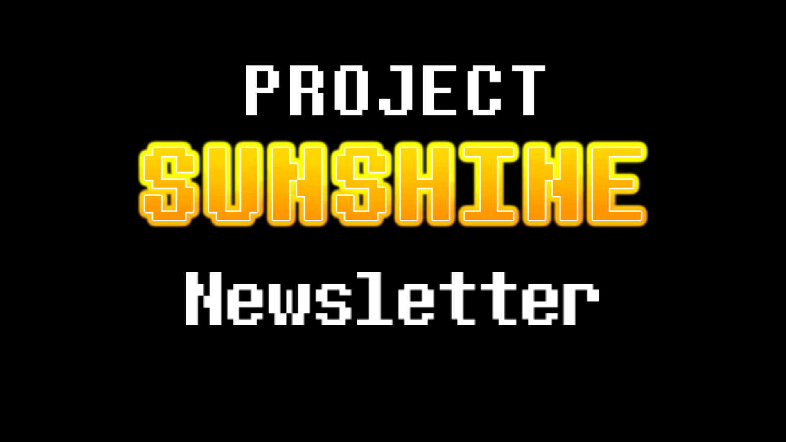
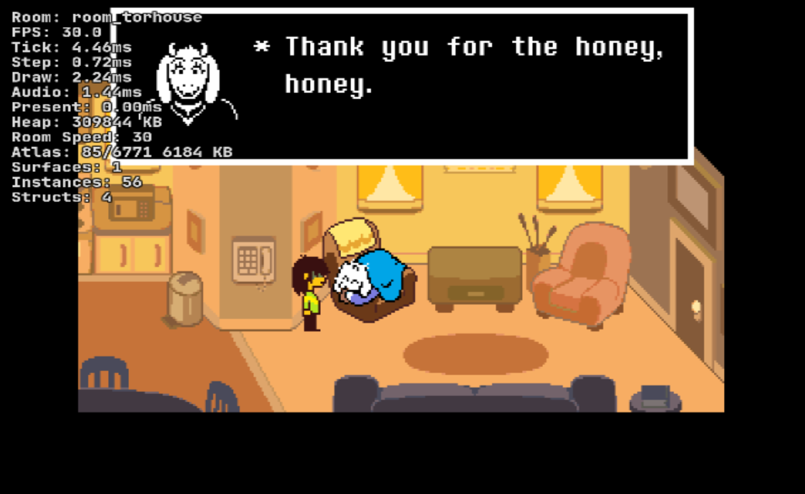

October Newsletter
Howdy!
Been a bit without a newsletter, and I have some updates. First, I want to address something.
What's happening with all these new ports and release dates?!
As you may know, public development has been messy lately, and I would like to explain why.
For one: There is a grand total of two people working on this project—me (Casriel) and Gray. Gray has undoubtedly been a huge help in the development of Cinnamon, and I thank them so much for contributing toward this project despite getting paid nothing for their hard work. The truth really is: UNDERTALE 3DS is not ready yet.
During the development of Cinnamon, many problems have arisen as a result of how things were handled back in the early days of this project. For example, the main Cinnamon repository forked Butterscotch in a way where it is very hard for us to work with it and update it. We emailed GitHub about this issue asking if they could change how the repository was forked. For about a month, we waited for a response, just to get nothing back until recently. They still have not fixed the issue. This has caused us to move repositories because GitHub's support is so utterly bad to the point where we could not be bothered to wait anymore and made a new repository.
For two: We want to make this one of the best pieces of homebrew there is.
We have been working hard to make this better for you. This means making it a lot more user-friendly and better for Old 3DS systems. We are trying to make Cinnamon better so it makes both my life easier when I start work on DELTARUNE 3DS and for other people who want to use Cinnamon to play their favorite games on 3DS. Having to hold back a release isn't something we want to do, but we promise you: you will be happier waiting instead of getting it now.
For three: Cinnamon recently had a full renderer rewrite.
Performance was very bad using the renderer we originally used (Citro2D), and if we wanted a good shot at things working correctly and well, a renderer switch was needed. We recently switched to Citro3D, which allows us to use features Citro2D didn't have to boost performance in games like DELTARUNE and UNDERTALE. This, again, is to better your experience.
For four: We have lives too.
We have jobs, and we have things more important to do. We cannot dedicate all our time to Cinnamon.
For five: We do not use AI in our code.
You may see a lot of ports (such as The Minish Cap, A Link to the Past, Mario Kart 64, or Mario Kart Wii) coming out very fast. This is because they have AI generate code for them. However, we do not do that. We code by hand, which obviously takes a lot longer than having an AI spit out garbage code that makes our ports randomly break like crazy or turn green. The 3DS, Wii, and Wii U backends have always been AI-free, and we intend to keep them that way.
For six: I am not good with release dates.
To be completely and utterly honest with you, every release date announced has been when I "thought it would release," not an ACTUAL timeline. This has caused major confusion because no release dates have been met. I want to make this clear: release dates are all my doing. I have been the one announcing release dates without prior confirmation from other developers. I apologize for the mass confusion with fake release dates. This is something that will not happen again, and release dates will only be announced when the team and I are ABSOLUTELY sure we can meet them. Otherwise, there is no ETA. This is the first big project I've ever managed, and it's been hard getting used to. I have learned a lot about owning a project, and old mistakes I made a while ago will not be made again.
Lastly, I want to explain why the Wii ports came out before 3DS.
Project Sunshine has evolved into more than just a 3DS port of UTDR—it's now a port of UTDR and other games to MULTIPLE consoles. Wii was released first because it had been a thought in our mind for a long time, and because the 3DS backend was already heavily optimized and we also had a Wii U base, a Wii port could be made very fast. So, that's what we did. Wii also doesn't have all the fancy bottom screen, borders, and console content that 3DS has, which made it a lot easier to release.
Looking back, I do agree that 3DS should've released before Wii did. We will not do something like this again.
Thank you to everyone who has been patient with us. I hope this gives you better insight into what actually happens behind the scenes and why delays like these occur.
General News
Time to share some updates!
...Wow! I only have three things to share!
Heres a little showcase of Pizza Tower running on 3DS. Doesn't run great but it runs!

We got DELTARUNE Chapter 5 running on the Wii! Still a bit.. err.. broken in some places but hey it boots!
Oh, yeah. I got UNDERTALE Yellow perfect in Butterscotch (not the 3ds ai one)! It can now be ported to 3DS without many gameplay issues! I'll work on it soon!
Also thanks for 13,000 members. dog approved